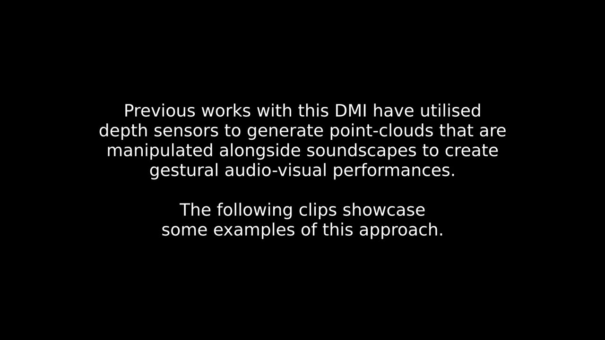
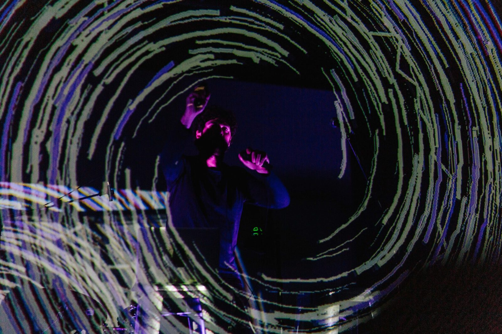

AirStream: A Collaborative Gestural Virtual Performance
PROJECT DESCRIPTION
For this collaborative performance, two musicians will improvise together over the internet using custom gestural controllers, the AirSticks. The AirSticks utilise off-the-shelf VR controllers and bespoke software to trigger and manipulate sound and graphics through hand movements. For this performance, 3D point clouds — captured using commodity depth sensors — are streamed in real-time into a shared virtual stage. The performer’s gestures create and manipulate the audio-visual environment as the ‘VJ’ curates the audience’s porthole into the space. With the rise of online musical experiences over Zoom, this performance brings new 3D flavour for both the musicians and the audience. Audio and graphic latency is reduced by sending MIDI and OSC data over the internet, rendering the sound on each end, while images streamed from the depth cameras utilise state-of-the-art compression algorithms. Future work will be dedicated to allowing the audience to enter the virtual space using VR or AR.
The AirSticks is an audio-visual gestural instrument designed to allow the composition, performance and improvisation of live electronic music and graphics using movements captured by handheld motion controllers, utilising bespoke software to generate musical and visual content from the gestural controller’s real-time position and rotation information. Through this interface, the performers are offered multidimensional control over audio-visual parameters, whilst providing a clearly transparent relationship between gesture and audio-visual product. In previous live performances with the Anon DMI, the graphics are projected onto a transparent screen—or scrim—to allow both the performer and audience to relate to them. The percussionist/ instrument designer has been performing with the AirSticks around the world since 2013 with highlights including a live performance with Alan Cumming at the MET museum in NYC, a TEDx performance with live electronic trio at Sydney’s Opera House and a solo performance of an hour long audio-visual collaboration with the collaborator at Sydney’s Recital Hall. The AirSticks were also presented at the 2019 Guthman Musical Instrument Competition in Georgia Tech in Atlanta, Georgia, where they took out the Audience Choice Awards for Best Instrument and Best Performance. A similar presentation was recently made at SIGGRAPH Asia’s 2019 Real-Time Live Competition, in which the AirSticks took out the judge’s award for Best Presentation.
PROGRAM NOTES
For this collaborative performance, two musicians will improvise together over the internet using custom gestural controllers, the AirSticks. The AirSticks utilise off-the-shelf VR controllers and bespoke software to trigger and manipulate sound and graphics through hand movements. 3D point clouds — captured using commodity depth sensors — are streamed in real-time into a shared virtual stage. The performer’s gestures create and manipulate the audio-visual environment, as the ‘VJ’ curates the audience’s porthole into the space. With the rise of online musical experiences over Zoom, this performance brings new 3D flavour for both the musicians and the audience. Audio and graphic latency is reduced by sending MIDI and OSC data over the internet, rendering the sound on each end, while images streamed from the depth cameras utilise state-of-the-art compression algorithms. Future work will be dedicated to allowing the audience to enter the virtual space using VR or AR.
PERFORMANCE REQUIREMENTS
We will submit a pre-recorded video of our live performance.
The video documentation provided is evidence of our experience using the system locally and new advances in compression technology allow us to take this work online.
MEDIA

▶Demonstration video explaining the proposed performance.


AirSticks Performance
ACKNOWLEDGEMENTS
No acknowledgements